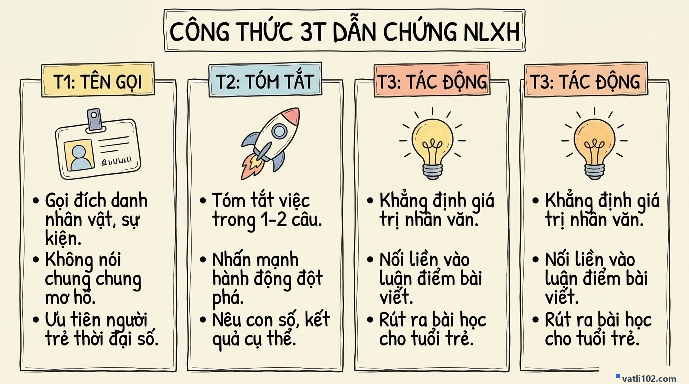

Sổ Tay Dẫn Chứng Nghị Luận Xã Hội 200 Chữ: Bí Quyết Chinh Phục Điểm 8+ Kỳ Thi Tốt Nghiệp THPT
Trong đề thi Tốt nghiệp THPT môn Ngữ văn theo chương trình mới, câu viết đoạn văn Nghị luận xã hội khoảng 200 chữ (chiếm 2.0 điểm) là phần thi quen thuộc nhưng lại khiến rất nhiều bạn học sinh lúng túng. Khi chấm bài, thầy cô thường nhận thấy hai lỗi phổ biến: một là các bạn chỉ nêu lý lẽ suông chung chung khiến bài văn khô cứng, hai là kể lể tiểu sử nhân vật quá dài dòng làm bài viết bị loãng và vượt quá dung lượng cho phép.
Để giúp các em khắc phục triệt để vấn đề này, bài viết hôm nay sẽ hướng dẫn công thức 3T đưa dẫn chứng gọn gàng, sắc sảo, kèm theo kho dẫn chứng thực tế về chủ đề "Cống hiến của người trẻ trong thời đại số" giúp bài viết thuyết phục và đạt điểm tối đa.
1. Vì sao đoạn văn 200 chữ cần có dẫn chứng xác thực?
Một đoạn văn nghị luận xã hội giàu sức thuyết phục không thể thiếu đi hơi thở của đời sống thực tế. Theo hướng dẫn chấm thi của Bộ Giáo dục và Đào tạo, dẫn chứng là tiêu chí quan trọng để đánh giá năng lực hiểu biết xã hội của học sinh:
- Tạo căn cứ thực tế vững chắc: Dẫn chứng là minh chứng rõ ràng nhất chứng minh quan điểm của em là đúng đắn, không phải là lời nói lý thuyết suông.
- Bộc lộ vốn hiểu biết xã hội: Việc lựa chọn dẫn chứng mới mẻ, mang tính thời sự cho thấy em là người ham học hỏi, biết quan sát và có trách nhiệm với các vấn đề của đời sống.
- Tạo ấn tượng với người chấm: Giữa hàng trăm bài thi dùng đi dùng lại những nhân vật cũ, một dẫn chứng người thật việc thật đương đại sẽ giúp bài thi của em nổi bật ngay lập tức.
2. Sơ đồ Sketchnote: Công thức 3T đưa dẫn chứng
Để đưa dẫn chứng vào bài mà không bị biến thành đoạn kể chuyện, các em chỉ cần áp dụng đúng quy tắc 3 câu theo sơ đồ sau:

3. Hướng dẫn chi tiết từng bước theo công thức 3T
T1: TÊN GỌI (Xác định đích danh — 1 câu)
Nêu chính xác tên nhân vật, tập thể hoặc dự án thực tế. Tuyệt đối tránh những cách nói mơ hồ như: "Có một người từng nói...", "Trong xã hội có bạn trẻ nọ..." vì sẽ làm mất đi tính chân thực của bài văn.
T2: TÓM TẮT VIỆC (Nêu hành động cốt lõi — 1 câu)
Tóm lược hành động tiêu biểu hoặc kết quả nổi bật nhất của nhân vật trong đúng 1 câu văn. Tập trung vào việc họ đã làm được gì cụ thể cho xã hội, thay vì kể lể năm sinh hay hoàn cảnh gia đình.
T3: TÁC ĐỘNG (Ý nghĩa và soi chiếu luận điểm — 1 câu)
Khẳng định thông điệp và ý nghĩa nhân văn mà hành động đó mang lại. Câu này đóng vai trò chốt lại dẫn chứng và móc nối trở lại với chủ đề bài viết.
4. Bảng dẫn chứng chọn lọc chủ đề "Thời đại số & Cống hiến"
| Nhân vật / Dự án | Hành động nổi bật (T2) | Ý nghĩa & Bài học (T3) |
|---|---|---|
| Dự án Trạm cứu hộ sách số (Nhóm sinh viên CNTT) | Chuyển đổi hơn 2.000 đầu sách giáo khoa và tài liệu học tập sang định dạng âm thanh miễn phí cho học sinh khiếm thị. | Dùng tri thức công nghệ để hỗ trợ những người yếu thế trong xã hội. |
| Kỹ sư AI Nguyễn Văn A (Chuyên gia công nghệ trẻ) | Trở về nước phát triển mô hình trí tuệ nhân tạo hỗ trợ chẩn đoán bệnh sớm cho các trạm y tế vùng sâu, vùng xa. | Thể hiện khát vọng đem năng lực cá nhân phục vụ trực tiếp cho quê hương. |
| Bạn trẻ Đặng Hoàng Giang | Ứng dụng công nghệ 3D số hóa các di tích lịch sử và mở triển lãm trực tuyến miễn phí cho cộng đồng. | Gìn giữ và quảng bá văn hóa dân tộc bằng phương thức hiện đại. |
5. Đoạn văn mẫu 200 chữ tham khảo (Đạt điểm 9.0+)
Bước vào thời đại số, tinh thần cống hiến của người trẻ không còn là những khái niệm xa vời mà được đo bằng chính những hành động thiết thực hàng ngày. Cống hiến hôm nay trước hết là ý thức chủ động học tập, làm chủ công nghệ và dùng tri thức ấy để tạo ra những giá trị hữu ích cho cộng đồng. Khi mỗi cá nhân biết dùng năng lực số để giải quyết các vấn đề thực tế, xã hội sẽ ngày càng văn minh và phát triển bền vững hơn. Minh chứng rõ nét cho điều này là nhóm bạn trẻ trong dự án "Trạm cứu hộ sách số", khi các bạn đã tình nguyện dùng công nghệ để chuyển đổi hàng ngàn đầu sách sang định dạng âm thanh miễn phí cho học sinh khiếm thị. Việc làm thầm lặng ấy cho thấy công nghệ chỉ thực sự có ý nghĩa khi được gắn liền với sự sẻ chia và lòng nhân ái. Trái lại, những ai đang mải mê chạy theo lối sống ảo, tiêu tốn thời gian vào những trào lưu vô bổ trên mạng xã hội sẽ dần tự đánh mất đi giá trị của chính mình. Đứng trước ngưỡng cửa trưởng thành, em tự nhắc nhở bản thân phải không ngừng rèn luyện kỹ năng số mỗi ngày, bắt đầu từ những việc làm nhỏ nhất để có thể đóng góp một phần công sức cho gia đình và xã hội mai sau.
6. Bảng đối chiếu: Cách viết dẫn chứng đúng và sai
| Cách viết chưa đạt (Bị trừ điểm) | Cách viết chuẩn điểm 8+ (Được đánh giá cao) |
|---|---|
| Dùng những nhân vật quá quen thuộc, bài nào cũng lặp lại (như Edison, Bill Gates). | Dùng nhân vật mới mẻ, đương đại, gắn liền với vấn đề xã hội Việt Nam hiện nay. |
| Kể lể dài dòng 4 – 5 dòng về xuất thân, năm sinh, trường học của nhân vật. | Tóm gọn hành động trong đúng 1 câu đắt giá: nêu rõ việc làm và kết quả đạt được. |
| Để dẫn chứng trơ trọi một mình, không giải thích lý do vì sao dẫn chứng đó có giá trị. | Dùng 1 câu nhận định (T3) để gắn kết trực tiếp hành động của nhân vật với luận điểm bài viết. |